DNS · quatro tarefas interativas
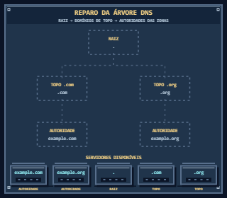
Reparo da árvore DNS · inicial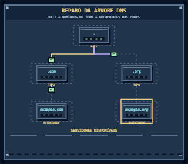
Reparo da árvore DNS · em operação Reparo da árvore DNS · concluído
Reparo da árvore DNS · concluído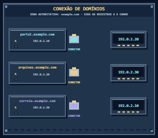
Conexão de domínios · inicial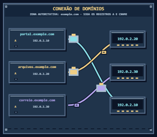
Conexão de domínios · em operação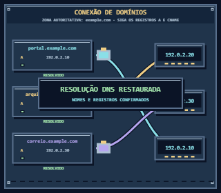
Conexão de domínios · concluído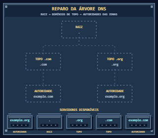
Reparo da árvore DNS · inicial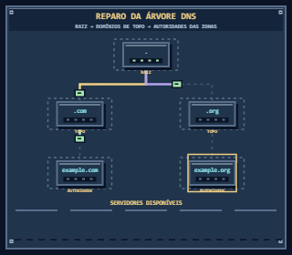
Reparo da árvore DNS · em operação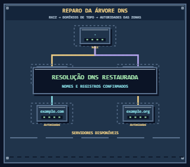
Reparo da árvore DNS · concluído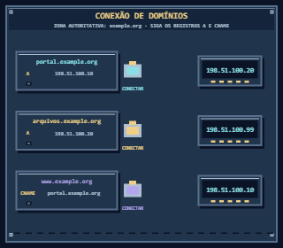
Conexão de domínios · inicial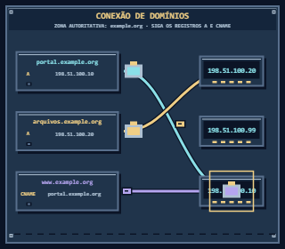
Conexão de domínios · em operação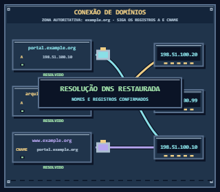
Conexão de domínios · concluído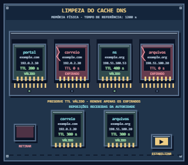
Limpeza do cache DNS · inicial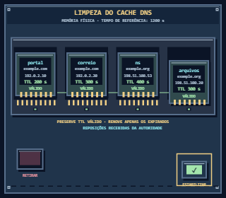
Limpeza do cache DNS · em operação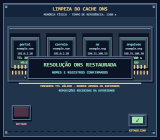
Limpeza do cache DNS · concluído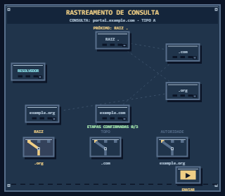
Rastreamento de consulta · inicial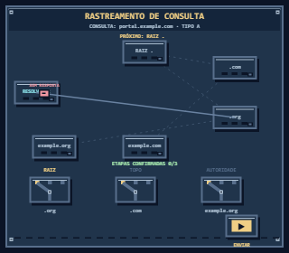
Rastreamento de consulta - servidor incorretoRastreamento de consulta · em operação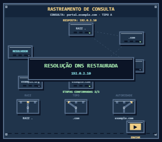
Rastreamento de consulta · concluídoRastreamento de consulta · inicial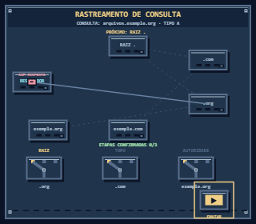
Rastreamento de consulta - servidor incorreto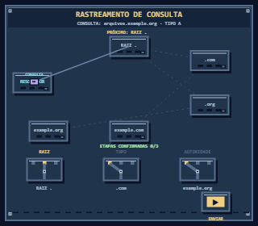
Rastreamento de consulta · em operação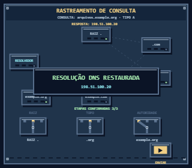
Rastreamento de consulta · concluído